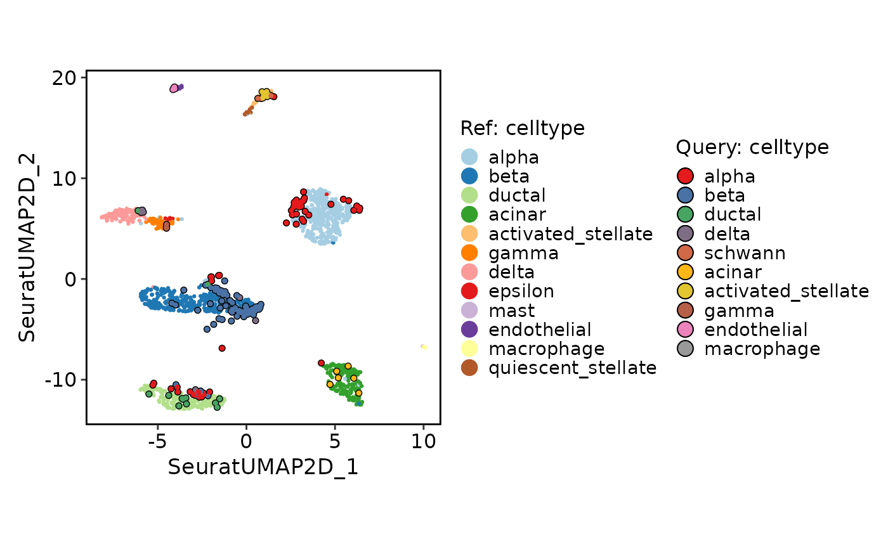
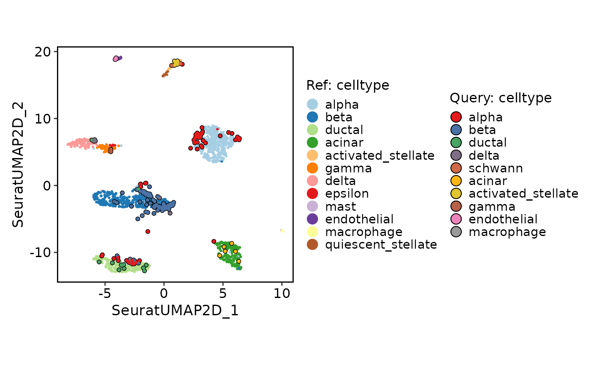

Single-cell reference mapping with Seurat method
Usage
RunSeuratMap(
srt_query,
srt_ref,
query_assay = NULL,
ref_assay = srt_ref[[ref_pca]]@assay.used,
ref_pca = NULL,
ref_dims = 1:30,
ref_umap = NULL,
ref_group = NULL,
normalization.method = "LogNormalize",
reduction_project_method = "pcaproject",
k.anchor = 5,
k.filter = 200,
k.score = 30,
k.weight = 100,
projection_method = c("model", "knn"),
nn_method = NULL,
k = 30,
distance_metric = "cosine",
vote_fun = "mean"
)Arguments
- srt_query
An object of class Seurat storing the query cells.
- srt_ref
An object of class Seurat storing the reference cells.
- query_assay
A character string specifying the assay name for the query cells. If not provided, the default assay for the query object will be used.
- ref_assay
A character string specifying the assay name for the reference cells. If not provided, the default assay for the reference object will be used.
- ref_pca
A character string specifying the name of the PCA reduction in the reference object to use for calculating the distance metric.
- ref_dims
A numeric vector specifying the dimension indices from the reference reduction to be used for calculating the distance metric.
- ref_umap
A character string specifying the name of the UMAP reduction in the reference object. If not provided, the first UMAP reduction found in the reference object will be used.
- ref_group
A character string specifying a metadata column name in the reference object to use for grouping.
- normalization.method
The normalization method to use. Default is "LogNormalize".
- reduction_project_method
Dimensional reduction to perform when finding anchors. Default is "pcaproject".
- k.anchor
How many neighbors (k) to use when finding anchors. Default is 5.
- k.filter
How many neighbors (k) to use when filtering anchors. Set to NA to turn off filtering. Default is 200.
- k.score
How many neighbors (k) to use when scoring anchors. Default is 30.
- k.weight
Number of neighbors to consider when weighting anchors. Default is 100.
- projection_method
A character string specifying the projection method to use. Options are "model" and "knn". If "model" is selected, the function will try to use a pre-trained UMAP model in the reference object for projection. If "knn" is selected, the function will directly find the nearest neighbors using the distance metric.
- nn_method
A character string specifying the nearest neighbor search method to use. Options are "raw", "annoy", and "rann". If "raw" is selected, the function will use the brute-force method to find the nearest neighbors. If "annoy" is selected, the function will use the Annoy library for approximate nearest neighbor search. If "rann" is selected, the function will use the RANN library for approximate nearest neighbor search. If not provided, the function will choose the search method based on the size of the query and reference datasets.
- k
An integer specifying the number of nearest neighbors to find for each cell in the query object.
- distance_metric
A character string specifying the distance metric to use for calculating the pairwise distances between cells. Options include: "pearson", "spearman", "cosine", "correlation", "jaccard", "ejaccard", "dice", "edice", "hamman", "simple matching", and "faith". Additional distance metrics can also be used, such as "euclidean", "manhattan", "hamming", etc.
- vote_fun
A character string specifying the function to be used for aggregating the nearest neighbors in the reference object. Options are "mean", "median", "sum", "min", "max", "sd", "var", etc. If not provided, the default is "mean".
Examples
data("panc8_sub")
srt_ref <- panc8_sub[, panc8_sub$tech != "fluidigmc1"]
srt_query <- panc8_sub[, panc8_sub$tech == "fluidigmc1"]
srt_ref <- Integration_SCP(srt_ref, batch = "tech", integration_method = "Seurat")
#> [2025-09-08 15:47:58.853034] Start Seurat_integrate
#> [2025-09-08 15:47:58.857406] Spliting srtMerge into srtList by column tech... ...
#> [2025-09-08 15:47:58.983994] Checking srtList... ...
#> Data 1/4 of the srtList is raw_normalized_counts. Perform NormalizeData(LogNormalize) on the data ...
#> Perform FindVariableFeatures on the data 1/4 of the srtList...
#> Data 2/4 of the srtList is raw_normalized_counts. Perform NormalizeData(LogNormalize) on the data ...
#> Perform FindVariableFeatures on the data 2/4 of the srtList...
#> Data 3/4 of the srtList is raw_counts. Perform NormalizeData(LogNormalize) on the data ...
#> Perform FindVariableFeatures on the data 3/4 of the srtList...
#> Data 4/4 of the srtList is raw_counts. Perform NormalizeData(LogNormalize) on the data ...
#> Perform FindVariableFeatures on the data 4/4 of the srtList...
#> Use the separate HVF from srtList...
#> Number of available HVF: 2000
#> [2025-09-08 15:48:01.198078] Finished checking.
#> [2025-09-08 15:48:01.772717] Perform FindIntegrationAnchors on the data...
#> [2025-09-08 15:48:13.938067] Perform integration(Seurat) on the data...
#> Warning: Layer counts isn't present in the assay object; returning NULL
#> Warning: Layer counts isn't present in the assay object; returning NULL
#> Warning: Layer counts isn't present in the assay object; returning NULL
#> [2025-09-08 15:48:19.340445] Perform ScaleData on the data...
#> [2025-09-08 15:48:19.499861] Perform linear dimension reduction (pca) on the data...
#> Warning: The following arguments are not used: force.recalc
#> Warning: The following arguments are not used: force.recalc
#> [2025-09-08 15:48:20.204675] Perform FindClusters (louvain) on the data...
#> [2025-09-08 15:48:20.309401] Reorder clusters...
#> [2025-09-08 15:48:20.373372] Perform nonlinear dimension reduction (umap) on the data...
#> Non-linear dimensionality reduction(umap) using Reduction(Seuratpca, dims:1-11) as input
#> Non-linear dimensionality reduction(umap) using Reduction(Seuratpca, dims:1-11) as input
#> [2025-09-08 15:48:30.689766] Seurat_integrate done
#> Elapsed time: 31.84 secs
CellDimPlot(srt_ref, group.by = c("celltype", "tech"))
#> Warning: No shared levels found between `names(values)` of the manual scale and the data's fill values.
#> Warning: No shared levels found between `names(values)` of the manual scale and the data's fill values.
 # Projection
srt_query <- RunSeuratMap(srt_query = srt_query, srt_ref = srt_ref, ref_pca = "Seuratpca", ref_umap = "SeuratUMAP2D", k.weight = 50)
#> Detected srt_query data type: raw_normalized_counts
#> Warning: Negative values detected!
#> Detected srt_ref data type: unknown
#> Warning: Data type is unknown or different between srt_query and srt_ref.
#> Run FindTransferAnchors
#> Projecting cell embeddings
#> Finding neighborhoods
#> Finding anchors
#> Found 178 anchors
#> Filtering anchors
#> Retained 178 anchors
#> Requested to reuse weights matrix, but no weights found. Computing new weights.
#> Warning: Layer counts isn't present in the assay object; returning NULL
#> Warning: Layer counts isn't present in the assay object; returning NULL
#>
#> Integrating dataset 2 with reference dataset
#> Finding integration vectors
#> Finding integration vector weights
#> Integrating data
#> Run UMAP projection
#> Use the reduction to calculate distance metric.
#> Use 'raw' method to find neighbors.
#> Running UMAP projection
#> 15:48:34 Read 200 rows
#> 15:48:34 Processing block 1 of 1
#> 15:48:34 Commencing smooth kNN distance calibration using 2 threads
#> with target n_neighbors = 30
#> 15:48:34 Initializing by weighted average of neighbor coordinates using 2 threads
#> 15:48:34 Commencing optimization for 200 epochs, with 5975 positive edges
#> 15:48:34 Finished
ProjectionPlot(srt_query = srt_query, srt_ref = srt_ref, query_group = "celltype", ref_group = "celltype")
#> Warning: No shared levels found between `names(values)` of the manual scale and the data's fill values.
#> Scale for x is already present.
#> Adding another scale for x, which will replace the existing scale.
#> Scale for y is already present.
#> Adding another scale for y, which will replace the existing scale.
#> Warning: No shared levels found between `names(values)` of the manual scale and the data's fill values.
#> Warning: No shared levels found between `names(values)` of the manual scale and the data's fill values.
#> Warning: No shared levels found between `names(values)` of the manual scale and the data's fill values.
#> Warning: Removed 2 rows containing missing values or values outside the scale range (`geom_point()`).
#> Warning: Removed 2 rows containing missing values or values outside the scale range (`geom_point()`).

# Projection
srt_query <- RunSeuratMap(srt_query = srt_query, srt_ref = srt_ref, ref_pca = "Seuratpca", ref_umap = "SeuratUMAP2D", k.weight = 50)
#> Detected srt_query data type: raw_normalized_counts
#> Warning: Negative values detected!
#> Detected srt_ref data type: unknown
#> Warning: Data type is unknown or different between srt_query and srt_ref.
#> Run FindTransferAnchors
#> Projecting cell embeddings
#> Finding neighborhoods
#> Finding anchors
#> Found 178 anchors
#> Filtering anchors
#> Retained 178 anchors
#> Requested to reuse weights matrix, but no weights found. Computing new weights.
#> Warning: Layer counts isn't present in the assay object; returning NULL
#> Warning: Layer counts isn't present in the assay object; returning NULL
#>
#> Integrating dataset 2 with reference dataset
#> Finding integration vectors
#> Finding integration vector weights
#> Integrating data
#> Run UMAP projection
#> Use the reduction to calculate distance metric.
#> Use 'raw' method to find neighbors.
#> Running UMAP projection
#> 15:48:34 Read 200 rows
#> 15:48:34 Processing block 1 of 1
#> 15:48:34 Commencing smooth kNN distance calibration using 2 threads
#> with target n_neighbors = 30
#> 15:48:34 Initializing by weighted average of neighbor coordinates using 2 threads
#> 15:48:34 Commencing optimization for 200 epochs, with 5975 positive edges
#> 15:48:34 Finished
ProjectionPlot(srt_query = srt_query, srt_ref = srt_ref, query_group = "celltype", ref_group = "celltype")
#> Warning: No shared levels found between `names(values)` of the manual scale and the data's fill values.
#> Scale for x is already present.
#> Adding another scale for x, which will replace the existing scale.
#> Scale for y is already present.
#> Adding another scale for y, which will replace the existing scale.
#> Warning: No shared levels found between `names(values)` of the manual scale and the data's fill values.
#> Warning: No shared levels found between `names(values)` of the manual scale and the data's fill values.
#> Warning: No shared levels found between `names(values)` of the manual scale and the data's fill values.
#> Warning: Removed 2 rows containing missing values or values outside the scale range (`geom_point()`).
#> Warning: Removed 2 rows containing missing values or values outside the scale range (`geom_point()`).
